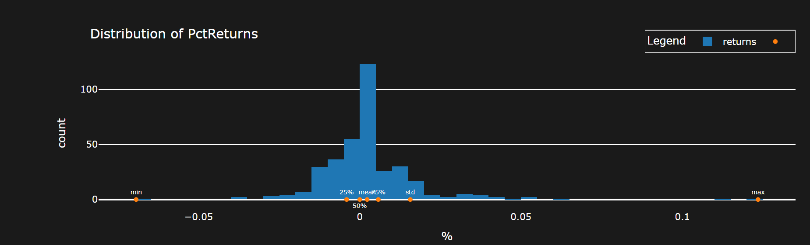
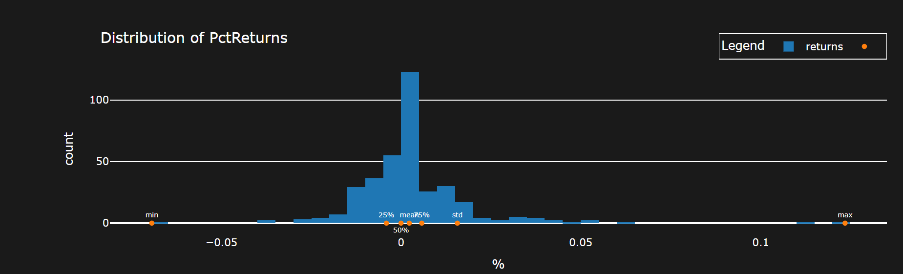
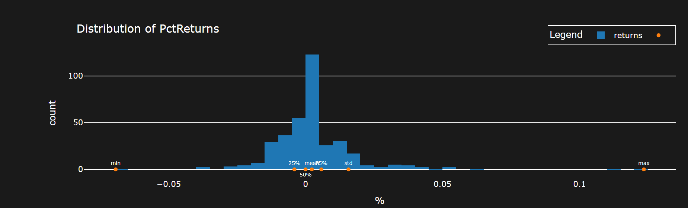
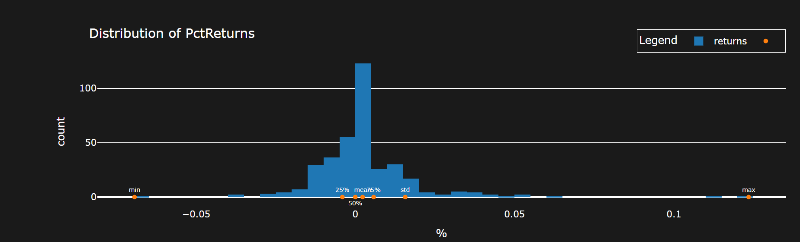

The goal is to finalize the back testing process and to arrive at a tangible result as related to cointegration pairs. \(V(a)\) is the value of an asset, \(C\) is the amount of cash, \(P\) is the portfolio object, \(M\) is the market, and \(A=\{a_i\}\) is the set of all non-cash assets, \(A_S\) is the non-cash short value of the assets, and \(A_ L\) is the non-cash long value of the assets, with \(\delta V(a )\) is the change in the value of the asset over a given \(\delta t = 1\) unit in time, and all values being considered functions of time \(V(a).\)\(w_i = w(a_i)\) is the weight of asset \(a_i\), with \(\sum_iw(a_i) = 1 - w_c\), where the \(w_c\) is the weight of the cash.\(\beta (V(a_i )) = \beta (V(a_i),V(M ) ) = \beta _i\) is the beta of the asset \(V(a_i)\) on a given time period with respect to the defined market. Note the relationship that if there are \(n\) points in time, there are \(n-1\) changes in time, meaning if \(V(a)(t_i)=V_i\), the return series of the asset \(\delta V(a)\) is defined as \(\delta V(a)(t)=V(a)(t)-V(a)(t-1)\). Then, \(\Delta{}V(t)=V_0\prod_{t=1}^n\delta {}V(a ) t\), meaning \(V(t_n) = V_i + \Delta V(t)\) The value of a portfolio is the sum of the assets and the cash in it defined on the interval \([t_i,t_f]\) with the initial condition \(V(P)(t _ i ) = C( t_ i) = C_0\), meaning the initial amount is just the cash allocated to be used. At any other time \(t > t_i\), \(V(P)=C+V(A)=C+V(A_L)-V(A_S),\delta (V(P))=V(P)-C_0=C+V(A_L)-V(A_S)- C_0 = \delta C+V(A_L)-V(A_S)\) At the next given moment in time, \(V(A_S{}) =\delta V(P)_{S},V(A_L) =\delta V(P)_{L}\) , \(\delta V(P)=\delta C+\delta V(A_L)-\delta V(A_S)\) A portfolio should always be continuous in value as a function of time \(V(P)(t)\). However, if there are \(n\) total entries/exits of positions in the given time period for the assets in the portfolio, \(C(t),V(A)(t)\) will have \(n\) total jumps each. Therefore, \(V(P)(t)\) 's behavior is primarily on the behavior of the assets during the time periods between each of the jumps, and the placement of the jumps, along with the number of them. If there are no jumps, the value of the portfolio is the value of each of its assets If the assets are just trending up during the time period, there is no point in having any jumps, and the best portfolio would be \(n=0\) jumps. If there are some different trends, the ideal portfolio is to have a long positions during trending up periods, and short positions during trending periods. Of course, the goal is to predict the next trend, given the trends up to that point in time. \(\sum\delta C\) over the entire interval is just a sum of the entry/exit prices of each of the positions held, meaning a finite sum of jumps, while there is no evolution essentially between each of these jumps, meaning that the evaluation of the assets determines the portfolio at these time steps Given a \(C_0\), there is a choice as to how much of the investment of the cash should be in each of the assets, and how much cash to not invest. The portfolio with the maximal possible return would be to invest all the cash into the most profitable asset. However, this is not actually known. If each asset has an initial investment of \(w_iC_0\), and \(w_cC_0\) is the amount of cash not invested, \(V(A{})=(1-w_c)C_0\prod_t(1+\delta V({}A{}){})\) since \(V(a_{i\ })={}w_iC_0\prod_t(1+\delta V(a_{i }){})\), which means \(V(P)=\sum_iV(a_i{}){}+C_0(1-\sum_iw_i)=\sum_i{}w_iC_0\prod_t(1+\delta V({}(a_{i }){}){}+ \ C_0(1-\sum_iw_i)=C_0 +C_ 0\sum_iw_i (\ (\prod_t(1+\delta V({}(a_{i }))-1)\) \(\Rightarrow \delta {V(P{)=}}\sum_iw_i (1+\delta V (a_{i })-1)=\sum_iw_i\delta V(a_i\ )\) \(\beta (\delta (V(P),\delta (V(M{}) )=\beta (\sum_iw_i\delta V(a_i\ ),\delta V(M{} ) )=\sum_iw_i\beta (\delta (V(a_i {}) )\) \(n\) sample-points\(\ \hat{Y},\hat{X },Y=\beta X+\alpha {}\)\(,Q=\sum_{i=1}^n(\hat{Y} _i-Y)^2\)\(=\sum_{i=1}^n(\hat{Y} _i-{}{}{}(\beta X+\alpha){}) {}^2\ {}\) \(\Rightarrow \partial_\beta Q =\sum-2X(\hat{Y} _i-{}{}{}(\beta X+\alpha)) = 0, \partial_\alpha Q =\sum-2(\hat{Y} _i-{}{}{}(\beta X+\alpha))=nE(\hat Y{})-\beta E(X)n+\alpha\ n=0\) \(\Rightarrow E(Y)=\beta E(X)+\alpha \,\) \(\Rightarrow \sum-X(\hat{Y} _i-{}{}{}(\beta X+E(Y)-\beta E(X)))\)\(\Rightarrow \sum-X({Y}-E(Y)) +\beta X^2-\beta XE(X)=\sum-X({Y}-E(Y)) +E(X\ )({Y}-E(Y))+\beta X^2-\beta XE(X\ )-\ E(X\ )({Y}-E(Y))\) \(=\sum-(X-E(X\ ) )({Y}-E(Y)) +\beta X(X-E(X\ ))-\ E(X\ )({Y}-E(Y))\) \(=nCov(X,Y\ )+\sum\beta X(X-E(X\ ))-\ E(X\ )({Y}-E(Y))-\ \sum\beta E(X\ \ )({X}-E(X))=nCov(X,Y\ )+\sum\beta (X^2-2E(X\ \ )({X}\ -E(X)^2)=-nCov(X,Y\ {}) +\beta nCov(X,X\ {}) =0\Rightarrow \beta =\frac{Cov(X,Y)}{Var(X) }\) \(\Rightarrow \alpha =E(Y)-\beta E(X\ ),\) Defining the vectors \(\ Y=>Y_i\,\hat{Y }=>\hat {Y_i}\) \((\hat{Y}-Y)^T(\hat{Y}-Y\Rightarrow \partial_Y{Q}=(\hat{Y}-Y)^T(-1)+(-1)^T(\hat{Y}-Y)=\sum_i(\hat{Y}-Y)_i(-1)+\sum_i(-1)(\hat{Y}-Y)=-2\sum_i(\hat{Y}- (\beta X+\alpha){})=0\) (t_i,t_f,test_len,roll_len) = n periods` A viable strategy is defined perhaps by the following factors The period of testing \((t_0,t_f)\) Return/Metric Statistics Total return across this period \(TR = V(P)_f - C_0\) Sharpe ratio \(SR = \frac{E(V(P))}{\mathcal{V(} V(P)){}}\) Signal generation: Size of the roll: \(r\) No trading on the period\((t_0,t_0+r)\) Trading on the period \((t_0+r,t_f)\) Given a signal time series \(X(t)\), \(E(r,X)\) is the rolling mean series of size r, defined on the interval \((t_0+r,t_f)\) , the standard deviation\(\mathcal{STD}(r,X)=\sqrt(\sum_{t=t_0}^r(X(t)-E(r,X))^2)\), and the z-score \(Z(t)=\frac{X(t)-E(r,X)(t)}{\mathcal{STD}(r,X )(t)}\) \(X(t)=\delta V(a_i)(t)\) is the usual setup in standard mean reversion of a stock \(X(t)=V(a_1)(t)-V(a_2)(t\beta (V(a_1{}),V({}a_2))\) is the setup in cointegration if \(\text{Coint}(V(a_1),V(a_2) )\) is true. In this situation \(X(t)\) is defined on the interval \((t_0+r',t_f),,r'< r \,\) \(\ \beta (V(a_1{}),V({}a_2))\) can be calculated as a rolling quantity on \((t_0+r,t_f)\) \(\delta V(P{{}})=\delta (\sum_iV(a_i))+\delta C=\beta (\delta (V(P\ ),\delta (V(M{})) ) \delta (V(M{}){}\ )+\alpha +\epsilon {}\) \(\delta V(P)=\delta\sum_iV(a_i) \Rightarrow \beta ( \delta\sum_iV(a_i),\delta (V(M{})) )=\sum_i\beta (\delta{}V(a_i{)},\delta (V(M{})) )\) \(V(a_i)=q_iP(a_i)\) \(V(a_1)(t)=V(a_2)(t\beta (V(a_1{}),V({}a_2){}\Rightarrow q_1P(a_1 )=q_2P(a_2\beta (V(a_1{}),V({}a_2) )\) \(\ \Rightarrow q_1\frac{P(a_1 )}{P(a_2 ){}\beta (V(a_1{}),V({}a_2) ) }=q_2\) \(V(P ) > 0\) is the condition to always be able to pay off the loss of the portfolio Setting a static cap of \(V\) to be \(C_0\), \(|q_1|=[\frac{C_0}{P(a_1 )}]\)
The data is of daily frequency from the \(SP\, 500\) of \(46 {}6\) stocks. There are roughly 2515 data points, which have no NA values in total. There are \(466*(465 )/2\) pairs which are possible, meaning to reduce the amount of pairs which can be back tested, the cointegration test is executed on each of these pairs. To set some relevant bench\({}\)mark, the data is tested for cointegration`(t_i,t_f,test_len,roll_len)` = \((0,17 50,500,250 )\), meaning a period of the given range with the given length of the test, 500, and the roll of the test up to the next range, 250. There are 6 periods here, and the condition for the benchmark is that 2 of the periods must pass the Engle-Granger test with a \(FILTER =\) (p-value < 0.0500).
def cointegration_filter(cur_stock,graphs=False):
cur_pair=get_time_period(cur_stock['stock_list'],True, freq=cur_stock['freq'], num_data_points=cur_stock['num_p'],shift=int(cur_stock['shift_parameter'])+1)
cur_stock = cur_stock['stock_list']
model = m.OLS((cur_pair[cur_stock[0]] ), m.add_constant( (cur_pair[cur_stock[1]]))).fit()
results = coint(np.log(cur_pair[cur_stock[0]] ),np.log(cur_pair[cur_stock[1]]))[1]
if graphs:
return model.resid.rolling(28).mean().vbt.plot(title=tuple(cur_stock[0:2]).__str__()). to_html(include_plotlyjs='cdn',include_mathjax=False,auto_play =False,full_html=False)
arr = np.array([False])
if results < .05 + .001 +0:
arr = np.array([True])
return arr
There are 500 plus pairs which satisfy this condition. If the condition is to pass 3 of the periods, the amount of pairs is 47.
Using the first condition, each of the pairs will be tested on the remaining points with a range of test, and roll.
Note there is a few approaches here it seems.
There can be the chosen parameters, or there can be the chosen time period, but either one can be chosen first to optimize, and be accurate
Optimization of parameters and selection of assets can be done on the same period.
The condition for a successful test as a first filter
COND =SR > 1.7, TR > 0 where the given values are the averages over the periods
def port_sim(pa,graphs=False):
stock_one,stock_two = pa['stock_list']
init_money = pa['init_money']
args=pa['parameters_']
outer=pa['outer']
freq = pa['freq']
shift_parameter = pa['shift_parameter'] - 500
va_ = get_time_period(pa['stock_list']+['SPY'], custom_data=True, num_data_points=pa['num_p'] ,shift=shift_parameter + 501,freq= pa['freq'])
va = va_[pa['stock_list']]
rolling = args[1]
r= va[stock_one].rolling(rolling).cov(va[stock_two])
var = va[stock_two].rolling(rolling).var()
beta = r/var
pa = pa['stock_list']
va_diff = va[stock_one] - beta * va[pa[1]]
list_r = va_diff.rolling(rolling)
z_score = (va_diff - list_r.mean()) / list_r.std()
z_score = z_score.dropna()
z_threshold = args[0]
exits = ((z_score > z_threshold) & (z_score.shift(1) < z_threshold)) + 0
entries = ((z_score < -1 * z_threshold) & (z_score.shift(1) > -1 * z_threshold))+0
init_cash = init_money
a_1 = (init_cash/va[pa[0]])
a_2 = ((a_1*(va[pa[0]]/va[pa[1]])*(1/beta)) + 0)
entries_exits = a_1*(entries - exits) + 0
entries_exits_ = -a_2*(entries - exits) + 0
entries_exits = pd.concat([entries_exits,entries_exits_],axis=1)
entries_exits.columns = pa[0:2]
entries_exits = entries_exits.replace(0,np.nan).ffill().fillna(0,)
data_close = va[pa].loc[entries_exits.index]
sold_ideal = (1/data_close * init_cash).astype(int)
quantities_practical = (entries_exits/entries_exits.abs())*(sold_ideal * ((sold_ideal < entries_exits.abs()) + 0) + ( entries_exits.abs()* (entries_exits.abs() <= sold_ideal) + 0))
entries_exits = quantities_practical
benchmark = va_['SPY'].pct_change()
benchmark_ = (1+benchmark).cumprod()
p = v.Portfolio.from_orders(close=data_close, log= True, size=entries_exits,size_type='TargetAmount',
init_cash=init_cash, freq=freq,cash_sharing=True)
metrics = [x for x in p.stats().index if 'Trade' not in x ]
metrics.remove('Benchmark Return [%]')
metrics.remove('Win Rate [%]')
metrics_values = pd.concat([p.stats()[metrics].to_frame(),p.returns_stats(benchmark_rets=benchmark).iloc[-7:].to_frame()]).squeeze()
r = p.value().pct_change().rolling(rolling).cov(benchmark)/benchmark.rolling(rolling).cov()
beta_ = p.value().pct_change().cov(benchmark)/benchmark.cov(benchmark)
if bol:
if not graphs:
return [metrics_values[x] for x in metrics_values.keys() if any([y in x for y in outer])] + [len(p.positions.records_readable)]
There was attempted optimization with `Optuna`
def objective(trial:optuna.trial.Trial):
pairs = pd.read_parquet('Cointegration7periods017 50.parquet')
pairs = pairs.drop(columns=pairs.columns[-4])
pairs = pairs[pairs.sum(axis=1) > 2].index
parameters = list(range(1750, 2500 - 200*2, 250 ))
name = 'cidt.parquet'
z_threshold = trial.suggest_float('z_threshold', 1.1, 1.8)
roll = trial.suggest_int('roll', 20,40,step=10)
results = runner_multiple(pd.DataFrame(index=[tuple(x) for x in pairs if 'SPY' not in x]), parameters,port_sim,init_money=1000,inner=None,num_p= 500,outer=['Total Return' , 'Sharpe', 'Alpha', 'Num'],freq='d', parameters_=[z_threshold,roll])
results = results[[x for x in list(results.columns) if 'Alpha' in x]].mean(axis=1).mean()
return results
Condition: Maximize the average Alpha of the pairs which pass $FILTER$ and satisfy
COND
The defined best strat which results
\(STRAT =(\text{Coint},a_1,a_2,r=25,r'={} 2 5,z_{\text{cutoff}} =1. 5 9)\)
Using this strategy with
Period: \((1750,2150,2158,2515) \)
And the condition for a successful test \(COND_2 = SR>1.7, TR > 0, A > 1\)
There are 5 pairs which satisfy \(COND_2\) and the graphs are shown below
Link
There could be state bias in terms of the two year period being tested on. However, it could still be accurate if it not actually be able to be classified as one state.
There could be a more general strategy of determining cointegration based on a first set of points and then executing it on the next period, and then rolling forward. Similar to the above, but not necessarily looking for long term execution of \(5 0 0\) points, but rather in the \(1 0 0\) range
However, this can be replicated as outlined to reasonable accuracy